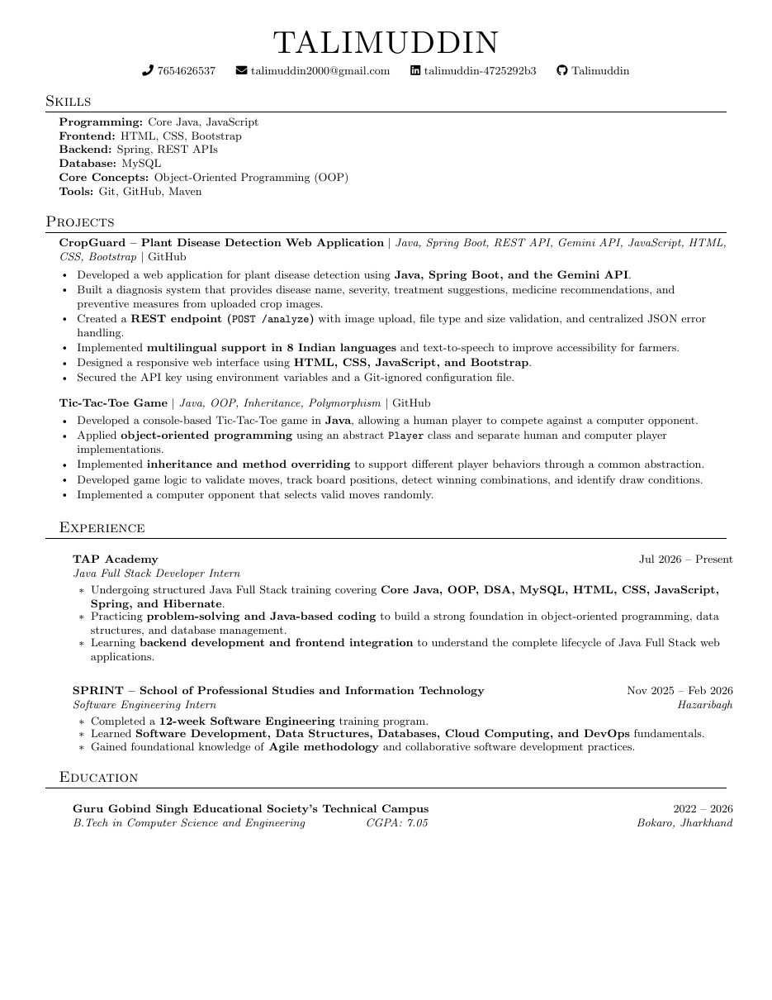

Programming
 Java
Java JavaScript
JavaScript
Hello, I'm
A Computer Science and Engineering graduate focused on Java, backend development and building useful, user-friendly web applications.
Get to know me
I'm a Computer Science and Engineering graduate who enjoys turning ideas into practical software.
My learning journey is centered around Java full stack development. I work with Java, object-oriented programming, JavaScript, web technologies and MySQL, while continuing to strengthen my backend development skills with Spring.
I enjoy understanding how things work, solving problems and building applications that are useful, accessible and easy to use. I'm currently looking for an opportunity to learn from a strong engineering team and contribute to real-world projects.
What I work with
Tools and technologies I've worked with or am currently learning through training and projects.
Skill levels are intentionally not shown as percentages. The focus is on transparent, verifiable experience rather than inflated ratings.
Selected work
A couple of projects where I applied programming concepts to build practical applications.
Plant Disease Detection Web Application
Built a web application that analyzes uploaded crop images and provides disease information, severity, treatment suggestions, medicine recommendations and preventive measures.
POST /analyze) with image upload, file type and size validation, and centralized JSON error handling.Console-based human vs computer game
Developed a console game where a human player competes against a computer opponent, applying object-oriented design and reusable player behavior.
More projects will be added as they are completed. Project descriptions reflect the information in my current resume.
My journey
TAP Academy
SPRINT – School of Professional Studies and Information Technology · Hazaribagh
Academic background
Guru Gobind Singh Educational Society's Technical Campus

PreviewFor recruiters
One page with my skills, projects, training and education. View it right here or save a copy.
Let's connect
I'm open to entry-level software development and Java full stack opportunities across India, including remote roles.